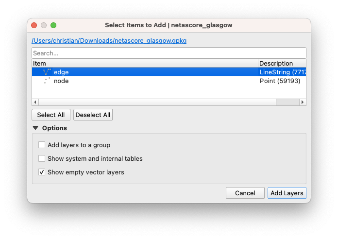

Visualisation in QGIS#
Part 1: Visualising walkability of routes in QGIS#
In this part of the tutorial, we will look at how to use QGIS alongside openrouteservice to do some analysis relating to the bikability of areas.
Required resources#
QGIS
openrouteservice QGIS plugin
Quick Map Services QGIS plugin
openrouteservice API key (see resources section to get this)
1. Installing QGIS and the openrouteservice plugin#
The first thing that you need to do if you haven’t already is to install QGIS on your system. QGIS is an opensource GIS application that is available on many systems. You can find out how to install it on your system form the QGIS installation pages.
When you have QGIS running, to make it easy to query openrouteservice you need to install the openrouteservice plugin. This plugin is available on the global QGIS plugin repository, and is called “ORS Tools”. To install it, use the following steps:
Open the Plugins Manager from the top menu Plugins -> Install and manage plugins
This will bring up the Plugin manager window (after refreshing the repo listings). In the search bar, enter “ors tools”, select the “ORS Tools” plugin, and click “Install Plugin” (bottom right of the window). This will install the plugin into your QGIS environment.
To make understanding the data easier, we will also install the “Quick Map Services” plugin. You do this the same as for the openrouteservice plugin, but search and select the “QuickMapServices” plugin.

2. Setting up the ORS Tools plugin#
Before you can use the ORS Tools plugin properly, you need to do some configuration to allow it to communicate with an openrouteservice instance. In our case, we have setup a special public instance that can be accessed with the API key which can be downloaded from the shared web drive listed in the resources section of this tutorial.
To configure a “provider”, navigate to the Web -> ORS Tools -> Provider Settings menu.
This will open up the Provider Settings window. We need to add a new provider by clicking on the “Add” button (lower
left corner) which will then prompt you for a name. Let’s call this provider “agile conference openrouteservice”.
After clicking “OK” you will now see the Provider Settings window again, but this time showing the text boxes to
enter information for the new provider. For the Base URL, you need to enter https://api.openrouteservice.org/agile-conference
and the API key that you can download from the shared web drive. You can leave the Request timeout as the default value
of 60. Once you have entered this information, click on Save to store it ready for use when you come to doing some
routing.

3. Doing some routing#
Now that we have all the plugins and setups needed, we can start actually producing some routes. To start off, it would be good to actually know where we are doing routes to and from. As openrouteservice is based on OSM data, it is good to have a map available that corresponds to that data. Luckily, we have already installed a plugin that allows you to show the OSM data as a base map - the QuickMapServices plugin. To load that OSM data, you need to use the QuickMapServices plugin top menu, so Web -> QuickMapServices -> OSM -> OSM Standard. This loads the OSM data as a raster base map in QGIS.

The openrouteservice setup that we will use for this tutorial contains road data for Scotland, so we need to make sure that our routes that we want to generate are in scotland. In this tutorial, we will focus on Glasgow, but feel free to also do things in other places in Scotland.
The bread and butter of the ORS Tools plugin is to allow you to generate a route between two points by querying the public openrouteservice API. When you load the plugin through the Web -> ORS Tools -> ORS Tools menu (or by clicking on the plugin’s icon in the toolbar), you will get the main window for the plugin:
At the top of this window you will find some links to useful online resources such as the Ask forum which is a great
place to go to if you have a question or problem relating to using this plugin or any other aspect of
openrouteservice. Next is the provider area where you select where you want to send your routing queries to. In an
earlier stage of this tutorial, you already added a new provider which sends requests to the special routing
instance setup for this tutorial. By default, the standard public openrouteservice provider is selected, but you can
choose another one that has been configured by clicking on the current provider to bring up a list. So let’s go
ahead and already select the agile conference openrouteservice provider. Next up is where you select routing
options. As a very first example, we will stick with the “Advanced Directions” (we will use the “Batch Jobs” area in
a later step). The next drop downs allow you to select a routing profile, and the preferred type of route. In the
scotland instance we have setup, there are only foot-walking and cycling-regular available, so let’s select
“cycling-regular” and the preference to “shortest”. This will add information to the request sent to the special
instance that tells it to do a normal bike route, and focus on getting the shortest route possible.
We now have the basic settings, so let’s select our start and end points for the route. For this example, let’s do a route from the university to the main train station in Glasgow. To add the points, click on the green “+” button which will hide the plugin window and move you back to the main QGIS window. To choose your points, click roughly where the university is to set the start point, and then double click around the train station to set the end point (if you single click, it will add a via point rather than specifying the end point). The following image shows roughly where to place these points:

After you double click to set the end point, you will be returned to the ORS Tools window and you can see the vertices in the list. If you accidentally added a via point or got another point in the wrong locations, you can delete it by selecting the point in the list, and then clicking the red “x” button. If you have not selected a point in the list, clicking this button will clear all the points in the list. To make things easier in later stages, you should click on the “Save Points” icon (below the “Delete Point” button) which will add the points to QGIS as a point layer called “Vertices”.
Now that all the information is added, you can click on “Apply” and you should get the shortest bike route between these two points added to QGIS as a layer. If there was an error displayed, make sure that you have selected the correct provider, that ti is configured correctly (with the API key from resources), and that you have selected “cycling-regular” and “shortest”.

So there we are, you now have a route in QGIS. If you open the attribute table for this layer, you will see that the feature has information about how long it is, and the estimated amount of time needed for the journey. It is a good idea to change the name of the layer to something more meaningful, so let’s call it “bike shortest standard” (by right clicking on the layer and choosing “Rename Layer”).
4. Reachability#
Reachability refers to how far you can get from a specified point in either distance (isolines) or time (isochrones). This sort of analysis is particularly useful if you want to determine things such as service area for facilities like subway stations. For our example, we will look at a basic visualisation of how far you can get from the central train station by foot in specified times.
To start, open up the ORS Tools plugin, and this time click on the “Batch Jobs” button. This will hide the point list area and instead bring show some buttons for doing some more advanced analysis.

From these buttons, click on “Isochrones from Point” to open a second ORS Tools window where you set parameters for
doing reachability analysis. In this window, select the “agile conference openrouteservice” as the provider, and
“foot-walking” as Travel mode. Click on the three dots by the “Input point from map canvas” entry and then go to the
main QGIS window where you can click on the map to set the starting point for the reachability analysis. For us,
let’s again click on the main train station in Glasgow. This will add the coordinates to the text box under the
“Input point”. Next, make sure that “Time” is selected under Dimension (so that we do reachability based on time)
and then enter the duration of travel in the “comma seperated ranges” box. This text fields accepts multiple comma
seperated value that represent either time in minutes, or distance in metres. We want to see how far people can get
from the station in 10, 20 and 30 minutes, so enter 10,20,30 in this box. Leave location type and advanced options
as is, and then click on “Run”.

This will add the isochrone to QGIS as a layer, with polygons representing how far you can get in 10, 20 and 30 minutes by foot from the train station.

5. Assessing bikability#
In the final part of this tutorial section, we will use the ORS Tools plugin to derive some information about the
bikability of routes.
In the special instance of openrouteservice provided for this tutorial, bikability has been included from NetAScore for all ways in Scotland. As discussed in the “openrouteservice” part of this tutorial, this information is stored on the routing graph and can be used to alter how much a particular way is avoided in routing. For this example, we will stick with the route between the university and main train station in Glasgow.
To start with open up the ORS Tools plugin and navigate to the Batch Jobs area. Once there, select the “Points (1 layer)” button from the Directions section to open up the advanced routing window. There are a number of settings here that you need to change to be able to do routing that takes into account bikability, but let’s start by setting the provider to be the “agile conference openrouteservice”, Travel Mode to “cycling-regular” and Travel preference to be “shortest”. For “Input”, click the box and select the layer that we earlier created by saving the start and end points form the basic routing generation (it should be called “vertices” unless you changed it). That is enough to be able to generate a route, but to do bikability, we need to scroll down and expand the “Advanced Parameters” section which will show some options that can be added to routing requests. Of relevance to this example, we need the “Extra Info”, “Csv Factor”, and “Csv Column” parameters. “Extra Info” is a list of attributes about the underlying features that make up a route which are then returned alongside the route geometry in an encoded format. Csv Column is the weighting value that we want to apply to ways of the route so that they are avoided more than they normally would be. Csv factor is a decimal value between 0 and 1 that defines how much effect the weighting factor has on the route generation itself, with 0 meaning there is no effect and 1 meaning that it has the highest level of effect as possible.
To start with, from Extra Info select “csv”, set “Csv column” to be “index_bike”, and “Csv factor” to be 0. This will result in the same shortest route as before as we are telling it that the weighting has no effect. However, having this information is important when we want to get the extra info about the bikability (the csv extra info needs to know which weighting to return).

When you click on “Run” you should then have the resulting route added to QGIS as a layer (Note: the route is displayed as a simple line which may be difficult to see against the OSM background map). Though this route is the same as the shortest route that we generated earlier, if you look into the attribute table you will see that rather there being one entry containing information about the route, there are a number of entries and a column called “CSV”. These entries represent segments of the route that have different values from the csv extra info, in our case these values represent the bikability of the route. One important thing to note here is that the numbers go from 0 to 100, where 100 represents parts of the route that are not bikable, and 0 represents those that are very bikable. To visualise this information, let’s change the symbology of the layer by right clicking on the layer in the Layers panel and selecting “Properties”. Navigate to the “Symbology” tab, and select “Graduated” from the drop down at the top of the window. Now select “CSV” as the “Value” and choose a suitable colour ramp. As we know that 0 is bikable and 100 is not bikable, you could select the “Spectral” colour ramp, and then choose to invert it so that higher values are seen as red. Now select an “Equal Interval” Mode with 5 Classes, and click the “Classify” button. This will create 5 equally sized classes that will then be used to show the information.

Once you have changed these settings, click “OK” to change the symbology of the route. If the lines are too small to see well, you can go back to the symbology settings, click on the “Symbol” area near the top of the window, and change the width of the line. You can also change the transparency of the background map by right clicking the “OSM Standard” layer, selecting properties, going to the “transparency” tab and then using the slider to reduce the opacity. Now you are able to see the bikability of the sections of the route.
Now what does a route look like where we tell it that we want a more bikable route? To see this, follow the above steps, but this time set the Csv Factor value to be 1. What we see in the resultant route is one that avoids the areas in the original route that were seen as low bikability.
If we want to see the difference in length and travel time, we need to rerun the above steps, but not select the csv option in the Extra Info area. This will result in the route being returned as a single line with the duration and length attributes attached. When we look at the two routes, for our route (the routes can vary significantly based on the exact position of the start and end points), we see that the route that doesn’t take into account bikability is 3.2km long and takes approximately 14 minutes to traverse, whereas the more bikable route is 3.4km long and takes almost 15 minutes. Though over these shorter distances, it may be preferable to take the slightly longer route that is more bikable, in others, the difference might be too great.
Part 2: Visualising bikeability and walkability for Glasgow City in QGIS#
In this part of the tutorial, we will visualise NetAScore results for the whole City of Glasgow. It is a typical first step after computing segment-based bikeability and walkability, allowing for exploratory, visual analytics of an area of interest.
Required resources#
As we do not need to compute routes for this analysis, it is sufficient to have a NetAScore output file at hand. To use the pre-computed example for Glasgow, simply download it from the shared web drive (netascore_glasgow.gpkg).
If you do not have installed QGIS yet, please follow the installation instructions.
Load the NetAScore data into QGIS#
To load the NetAScore data, simply open QGIS and drag and drop the netascore_glasgow.gpkg (or whatever local output you want to visualize) from your file browser into the main QGIS window. As an alternative, you may create a new project first and then select and double-click the file from the “Browser” panel.
QGIS will ask you about which layer(s) to add. For visualising segment-based bikeability and walkability, adding the “edge” layer is sufficient. To do so, simply click on the layer name to select it, and then press “Add Layers”.

After import, your QGIS window should look similar to the one shown below. All segments of the imported network have the same colour and line style. Therefore, we will add a style definition to visualise bikeability or walkability values in the next step.
Create a symbology for bikeability#
For colouring segments according to their bikeability or walkability, we need to change the layer symbology. To do so, first double-click on the layer name in the “layer” panel. This will open the layer properties dialog. Then, in the navigation bar on the left, select “Symbology”. It should look similar to the screenshot below.
Instead of the “Single Symbol” visualisation, we now want to use a “Graduated” style. Please select this option from the topmost dropdown field.
In the next step, we need to choose the column to use as input for graduated visualisation. For example, if you want to visualise bikeability, select the column “index_bike_ft” from the dropdown labeled “Value”. This refers to the “bike” profile we used when running NetAScore, with “_ft” being the forward direction along each segment.
Once the input values are defined, you can now choose a color ramp. With clicking on the small arrow next to the color ramp, you can choose from several presets. The “Spectral” preset is the one we applied in our example. A good starting point for classification is to use “Equal Interval” mode with 5 classes. The following screenshot gives an overview of the parameters we applied:

As the bikeability and walkability index values range from 0 (unsuitable infrastructure) to 1 (very suitable infrastructure), make sure that the classification uses these as upper and lower bounds. For the example of Glasgow, this should be set automatically. If not, simply double-click the values shown in the “Values” column next to the coloured class symbols and edit the bounds manually.
After clicking “OK”, your data should be visualized similar to the image below:
Add a visualisation for walkability#
If you want to add a visualisation for walkability as well, just right-click on the bikeability layer in the “Layers” panel and choose “Duplicate Layer”. You may now want to give each layer an intuitive name - this can be done by right-clicking and selecting “Rename Layer”.
Then, for the layer that should represent walkability, open the layer properties by double-clicking the layer name. It should be sufficient to now select the column “index_walk_ft” as the “Value” instead of the bikeability index. After clicking on “OK”, your layer should update accordingly.
You can toggle layer visibility using the checkbox next to layer names in the “Layer” panel.
Add a basemap#
To add a background map, you can either choose the default OSM tiles provided with QGIS, or use the “QuickMapServices” extension. For the default OSM tiles, double-click on “OpenStreetMap” within the “XYZ Tiles” section in the “Browser” panel (see screenshot for reference). The QuickMapServices also provide layers with a reduced color scheme - e.g. CartoDB Positron.

Looking into index robustness#
NetAScore currently allows basic tracking of index robustness. The columns index_bike_ft_robustness, index_walk_ft_robustness, etc. provide an indicator that represents the sum of weights for all indicators available per segment.
For example, as the default profile includes gradient with a weight of 0.2 and we did not supply DEM data for the Glasgow example, the robustness value is reduced by 0.2.
If you visualize the robustness column in QGIS, you will notice that consequently the maximum robustness for the whole area is 0.8. If relevant OSM attributes are missing and cannot be inferred from the context, the index robustness is further decreased.